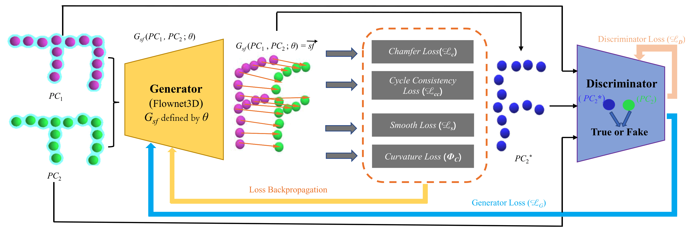

Chaokang jiang
About Me
I was born in 1998 and currently work as a Computer Vision (CV) Algorithm Engineer at PhiGent Robotics in Beijing. I obtained my Master’s degree in Engineering in 2023, during which I was jointly trained by China University of Mining and Technology and Shanghai Jiao Tong University. I was fortunate to be guided by Professor Hesheng Wang and to collaborate with my senior, Dr. Guangming Wang from the University of Cambridge. At the IRMV Lab, I participated in numerous engineering projects, such as lawn mowing robots and 4D automatic annotation, which significantly enhanced my practical engineering skills.
Research Interests
- Computer Vision: image recognition, image generation, video captioning
- World Models: model-based automatic driving scene generation
- 2D/3D Object Detection: pure vision, pure LiDAR and 2D-3D fusion deep learning algorithms
- Deep Learning on Point Clouds: feature extraction, matching and fusion, graph network
- 3D Scene Flow: unsupervised learning, point cloud processing
- LiDAR Odometry: large-scale point cloud registration, motion estimation
News
- [Oct. 2024] Our paper “NeuroGauss4D-PCI: 4D Neural Fields and Gaussian Deformation Fields for Point Cloud Interpolation” is accepted to NeurIPS 2024.
- [May. 2024] Our paper “NeuroGauss4D-PCI: 4D Neural Fields and Gaussian Deformation Fields for Point Cloud Interpolation” is available on arXiv.
- [May. 2024] Our paper “MAMBA4D: Efficient Long-Sequence Point Cloud Video Understanding with Disentangled Spatial-Temporal State Space Models” is available on arXiv.
- [Feb. 2024] Our paper “3DSFLabelling: Boosting 3D Scene Flow Estimation by Pseudo Auto-labelling” is accepted to CVPR 2024.
- [Feb. 2024] Our paper “DifFlow3D: Toward Robust Uncertainty-Aware Scene Flow Estimation with Iterative Diffusion-Based Refinement” is accepted to CVPR 2024.
Publications
-
NeurIPS 2024NeurIPS 2024
-
 CVPR 2024
IEEE/CVF Conference on Computer Vision and Pattern Recognition (CVPR) 2024
CVPR 2024
IEEE/CVF Conference on Computer Vision and Pattern Recognition (CVPR) 2024 -
CVPR 2024IEEE/CVF Conference on Computer Vision and Pattern Recognition (CVPR) 2024
-
ICCV 2023IEEE/CVF International Conference on Computer Vision (ICCV), 2023
-
AAAI 2023AAAI Conference on Artificial Intelligence 2023
-
 arXiv
arXiv
-
 TIM
IEEE Transactions on Instrumentation and Measurement
TIM
IEEE Transactions on Instrumentation and Measurement -
arXivarXiv
-
 TII
IEEE Transactions on Industrial Informatics June 2023
TII
IEEE Transactions on Industrial Informatics June 2023 -
 AISAdvanced Intelligent Systems
Projects
Autonomous Intelligent Lawn Mower Robot (2021-09 ~ 2022-11)
Collaboration Project between SJTU IRMV & Positec Technology


Responsibilities:
- Developed slope detection for lawn mowers using radar and depth camera, including point cloud clustering, segmentation, fitting, and detection techniques
- Developed 3D obstacle detection using point cloud and depth camera on the TX2 platform for various complex scenarios in flat and grassy environments
- Designed color texture feature encoding methods and efficient fusion with dense 3D point cloud features
The lawn mower robot project encompasses AI vision obstacle classification and recognition, multi-sensor offline and online calibration, visual-inertial odometry, global pose estimation based on multi-sensor fusion, obstacle detection techniques using LiDAR and depth cameras, and multi-sensor fusion for 3D obstacle detection.
Multimodal Fusion Technology in Autonomous Intelligent Lawn Mowing Robots (2021-09 ~ 2023-03)
Collaboration Project between SJTU IRMV & Positec Technology


Responsibilities:
- A new data pre-processing method is proposed to achieve more efficient fusion of the different signal features. The indexes between different sensor signals are established in advance and stored in a map, while synchronized sampling provides fast and accurate query correspondence for feature fusion.
- Multiple methods are explored to achieve cross-modal feature fusion more reasonably and efficiently, including soft query weights with perceiving the Euclidean distance of bimodal features, and fusion modules based on dual attention correlating the geometric features and texture features of the scene.
- A bi-modality feature fusion module with both hard and soft components is proposed, which guides the network to refine more accurate 3D positions and orientations of objects in the second stage. The proposed method achieves advanced performance on the nuScenes dataset, especially demonstrating powerful performance for small object detection with degraded image quality and objects with few LiDAR signals.
This is a preliminary research project aimed at exploring data-driven methods for image and LiDAR fusion. We focused on two 2D-3D fusion approaches to address the high latency and low accuracy of current 3D obstacle detection models. Our goal is to accelerate the practical application of these models.
Integrated Network for Perception, Planning and Decision-making (2021-08 ~ 2022-10)
Independent Innovation Joint Fund Project of The Future Laboratory of The Second Aerospace Academy


Responsibilities:
- Developed perception tasks in simulation environments by integrating the Webots robot simulator with deep learning for 2D tracking and detection.
- Deployed depth estimation and mapping in SLAM models, and 3D semantic segmentation models.
- Deployed real-time dense mapping for monocular visual SLAM on ROS.
The project focuses on designing an integrated reinforcement learning network encompassing perception, planning, and decision-making. The perception module includes depth estimation, semantic segmentation, odometry estimation, loop closure detection, dense mapping, and object detection and tracking.
Video Offline 4D Automatic Labelling (2022-11 ~ 2023-04)
Collaboration Project between Hozonauto and SJTU IRMV


Responsibilities:
- Perception team leader, responsible for reporting, summarizing, and controlling the phased progress of each sub project. Timely follow up and assist in resolving technical issues encountered.
Imitating Tesla’s 4D automatic labeling solution, the process includes the following parts, input signal processing, standard scene perception tasks, ground element reconstruction and labeling, static scene reconstruction and 3D dynamic object labeling, overall 4D automatic labeling summary, badcase simulation.
Road Preview - Disparity Estimation (2023-05 ~ 2023-11)
Collaboration Project with BYD


Responsibilities:
- Optimized the NDR-Ne pseudo disparity estimation model, improving data clarity, preprocessing, and augmentation.
- Enhanced the compressed network model for better efficiency, accuracy, and robustness.
- Deployed the model on the TDA4-AL board, addressing various bad cases and improving overall model robustness.
This project focuses on road preview and disparity estimation tasks, including improving pseudo disparity estimation models, optimizing neural networks for real-time performance, and deploying robust solutions on embedded platforms.
Road Segmentation and Preview (2023-05 ~ 2024-03)
Collaboration Project with BYD


Responsibilities:
- Designed and optimized the segmentation model to handle small-scale objects (e.g., speed bumps) in large-scale road environments.
- Improved feature extraction and fusion for handling texture-similar backgrounds and objects in challenging lighting or occlusion scenarios.
- Integrated advanced loss functions like OhemCrossEntropy, Lovasz, and RMI Loss to improve segmentation accuracy and boundary precision.
- Deployed the segmentation model on the TDA4-AL platform, achieving real-time performance and robustness in practical scenarios.
- Collaborated with teams to address challenging cases (e.g., shadows, water stains, and complex lighting), significantly improving model reliability.
- Conducted quantization-aware training (QAT) to optimize the model for deployment on embedded systems without sacrificing performance.
This project focuses on intelligent road segmentation and preview tasks, leveraging cutting-edge neural networks to handle challenges such as small object detection, complex backgrounds, and adverse lighting conditions. The project involved end-to-end optimization, from model design and training to deployment on embedded platforms, ensuring real-time performance and robustness. Key features include advanced loss functions, quantization-aware training, and integration with BYD’s intelligent systems for enhanced vehicle control and safety.
3D Motion Estimation - Scene Flow and Deployment (2023-08 ~ 2023-12)
Collaboration Project with PhiGent Robotics


Responsibilities:
- Built a high-quality 3D scene flow training dataset using multi-source data to improve model generalization.
- Designed and maintained two efficient 3D scene flow estimation networks, optimizing for large-scale point cloud data and complex operators.
- Developed an automatic annotation framework to generate consistent, high-accuracy labels, significantly reducing manual labeling efforts.
- Conducted extensive experiments on public datasets, demonstrating superior accuracy and computational efficiency compared to baseline methods.
- Converted models to ONNX format and optimized them for deployment on NVIDIA Orin (TensorRT) and Horizon J6E (Horizon SDK).
This project focuses on building robust 3D motion estimation solutions, including creating advanced 3D scene flow estimation networks, developing an auto-labeling framework, and deploying the models on embedded hardware platforms. The work demonstrates significant improvements in accuracy, efficiency, and real-time performance over traditional methods while addressing challenges in operator compatibility and dataset availability.
4D Auto-Labeling and 3D Pure LiDAR Detection (2024-05 ~ 2023-11)
Internal R&D Project on VRU Recognition and 3D Detection


Responsibilities:
- {"Enhanced VRU detection recall rates through"=>[{"Data-level optimizations"=>"3D object augmentation using Copy-Paste techniques, incorporation of LiDAR reflectivity features, and expansion of manually labeled VRU and trailer datasets."}, {"Model-level optimizations"=>"Improved BEV (Bird's Eye View) resolution and adapted network structures for varying perception ranges."}, {"Loss function optimizations"=>"Introduced Geometric Alignment Loss to refine detection box precision."}]}
- Conducted extensive experiments on internal datasets, showcasing significant improvements in detection accuracy and robustness.
- {"Designed a 3D pure LiDAR detection model, focusing on"=>["Dataset adaptation and pipeline creation to ensure high-quality annotations.", "Iterative model architecture and parameter optimization to enhance performance.", "Identifying and fixing failure cases by prioritizing and resolving critical issues."]}
- Established a continuous improvement cycle for bad-case analysis and validation of optimization strategies.
This project integrates a 4D auto-labeling system with an efficient 3D pure LiDAR detection model to enhance VRU (Vulnerable Road User) recognition and detection precision. It addresses challenges in data annotation, improves network robustness through data/model optimization, and deploys cutting-edge solutions for real-world applications. The work emphasizes innovation in data augmentation, loss function design, and system-level analysis to achieve superior detection accuracy and recall rates.
End-to-End Autonomous Driving (LiDAR + 11V Fusion) Project (2024-06 ~ 2023-09)
Collaboration Project with lantu


Responsibilities:
- Developed pipelines for data reading, processing, and format conversion, ensuring seamless integration of LiDAR and camera data.
- Implemented LiDAR motion distortion correction using global pose transformation matrices and timestamp synchronization.
- Designed and optimized LiDAR-camera fusion for obstacle detection, leveraging sparse anchors and map instances to enhance multi-modal feature aggregation and improve perception accuracy.
This project aims to achieve an end-to-end autonomous driving system by fusing LiDAR data with 11 multi-view cameras. The system outputs high-precision perception, prediction, planning, and control information, enabling enhanced autonomous driving performance in complex environments.
Controlled Data Generation for Traffic Scenarios (2023-05 ~ 2023-11)
Collaboration Project with BYD


Responsibilities:
- Developed a **single-frame generation module** supporting multi-view (4 fisheye, 7V, 11V) data creation and editing with integrated 3D bounding boxes and map labels, optimizing algorithms for better efficiency and completeness.
- Designed a **video generation module** using autoregressive modeling to produce high-quality continuous frames with temporal consistency, integrating DDIM for faster inference and improved visual quality.
- Supported conditional video generation based on text prompts or offline BEV traffic flow, ensuring realistic and diverse driving scenarios.
- Leveraged ControlNet to align temporal conditions and latent features, enabling controlled multi-view surround video generation in a single pass.
- Achieved automated generation for multi-view data, supporting 4 fisheye, 7V, and 11V formats, with enhanced temporal coherence and cross-view consistency.
This project focuses on generating diverse and temporally consistent traffic scenario videos using advanced generative models such as LLM-enhanced world models and latent diffusion models. The system supports multi-view video generation under various conditions (e.g., weather, time of day) and ensures adherence to traffic rules, providing valuable data for autonomous driving and traffic planning.
Services
Conference Reviewers
IEEE/CVF Conference on Computer Vision and Pattern Recognition (CVPR) 2024 IEEE/RSJ International Conference on Intelligent Robots and Systems (IROS) 2024 Conference on Neural Information Processing Systems (NIPS) 2024
Journal Reviewers
Powered by Jekyll and Minimal Light theme.